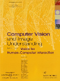

NEWS!
- 21.11.2017:The open reviews and presentations are online!
- 21.09.2017: The GRAIL Best Paper award winner was Detection and Localization of Landmarks in the Lower Extremities Using an Automatically Learned Conditional Random Field by Alexander Olivier Mader et al. Have a look Here!
- 21.09.2017: Have a look at GRAIL 2017!
- 16.08.2017: Our 2nd Keynote Speaker will be Dr. Sarah Parisot, giving a short tutorial about how to apply Deep learning on graphs: Convolutional Neuronal Networks on Irregular Domains. Don't miss it!
- 16.08.2017: Complete conference program is online!
- 25.07.2017: Reviews and rebuttals will be made publicly available in the workshop website
- 25.07.2017: 7 papers were accepted after rigorous reviews by at least 3 members of the program committee. Proceedings will be published jointly with the rest of the MICCAI workshops by LNCS
- 12.06.2017: Submission deadline has been extended until Monday 19th June (23:59 PST)! (Click here to submit)
- 15.05.2017: The submission system is open! (Click here to submit)
- 10.05.2017: Download the first Call for Papers for GRAIL'17 (Click here)
- 10.05.2017: Our program committee is online!
- 12.04.2017: Georg Langs will be one of our keynote speakers at GRAIL, talking about about Graphs and Manifold Learning in Computational Neuroscience: Correspondence and Individuality
- 10.04.2017: The GRAIL Best Paper Award will include a cash price (sponsored by CentraleSupelec and INRIA) and the posibility to submit an extended version of the paper to the journal of Computer Vision and Image Understanding (CVIU, Elsevier)
SCOPE

GRAIL 2017 is the first international workshop on GRaphs in biomedicAl Image anaLysis, organised as a satellite event of MICCAI 2017 in Quebec, Canada, on 14th September 2017 (PM).
Graph-based models have been developed for a wide variety of problems in computer vision and biomedical image analysis. Applications ranging from segmentation, registration, classification, and shape modelling, to population analysis have been successfully encoded through graph structures, demonstrating the versatile and principled nature of the graph based approaches.
Graphs are powerful mathematical structures which provide a flexible and scalable framework to model objects and their interactions in a readily interpretable fashion. As a consequence, an important body of work has been developed around different methodological aspects of graph including, but not limited to, graphical models, graph-theoretical algorithms, spectral graph analysis, graph dimensionality reduction, and graph-based network analysis. However, new topics are also emerging as the outcome of interdisciplinary studies, shedding light on areas like deep structured models and signal processing on graphs.
With this workshop we aim to highlight the potential of using graph-based models for biomedical image analysis. Our goal is to bring together scientists that use and develop graph-based models for the analysis of biomedical images and encourage the exploration of graph-based models for difficult clinical problems within a variety of biomedical imaging contexts.
The covered topics include but are not limited to:
- Probabilistic graphical models for biomedical image analysis
- Discrete and continuous optimization for graphical models
- Signal processing on graphs for biomedical image analysis
- Deep/machine learning on structured and unstructured graphs
- Convolutional neural networks on graphs
- Graphs for large scale population analysis
- Graph-based shape modeling and dimensionality reduction
- Combining imaging and non-imaging data through graph structures
- Graph-based generative models for biomedical image analysis
- Graph spectral methods
- Algorithms on graphs
- Applications of graph-based models and algorithms to biomedical image analysis tasks (segmentation, registration, classification, etc.)
Program
14th September, 2017
| 13:30 | Intro to the Workshop |
| 13:40 | Keynote speaker: Georg Langs "Graphs and Manifold Learning in Computational Neuroscience: Correspondence and Individuality" |
| TRACK: GRAPHS FOR NEUROIMAGING | |
| 14:15 | Classifying phenotypes based on the community structure of human brain networks Anvar Kurmukov; Marina Ananyeva; Yulia Dodonova; Joshua Faskowitz; Boris Gutman; Neda Jahanshad; Paul Thompson; Leonid Zhukov |
| 14:30 | Autism Spectrum Disorder Diagnosis Using Sparse Graph Embedding of Morphological Brain Networks Carrie Morris; Islem Rekik |
| 14:45 | Topology of surface displacement shape feature in subcortical structures Amanmeet Garg; Donghuan Lu; Karteek Popuri; Mirza Faisal Beg |
| TRACK: PROBABILISTIC GRAPHICAL MODELS | |
| 15:00 (Note the time change) | Graph Geodesics to Find Progressively Similar Skin Lesion Images Jeremy Kawahara; Kathleen P. Moriarty; Ghassan Hamarneh |
| 15:15 | Extraction of Airways with Probabilistic State-space Models and Bayesian Smoothing Raghavendra Selvan; Jens Petersen; Jesper Pedersen; Marleen de Bruijne |
| 15:30 | COFFEE BREAK |
| 16:00 | Keynote speaker: Sarah Parisot "Deep Learning on Graphs: Convolutional Neuronal Networks on Irregular Domains" |
| 16:40 |
Detection and Localization of Landmarks in the Lower Extremities Using an Automatically Learned Conditional Random Field Alexander O Mader; Cristian Lorenz; Martin Bergtholdt; Jens von Berg; Hauke Schramm; Jan Modersitzki; Carsten Meyer |
| 16:55 (Note the time change) | Uncertainty Estimation in Vascular Network Graphs Markus Rempfler; Bjoern Andres; Bjoern Menze |
| 17:10 | Final remarks and GRAIL best paper Award |
Keynote Speakers
Georg Langs
Medical University of Vienna / Massachusetts Institute of Technology
Graphs and Manifold Learning in Computational Neuroscience: Correspondence and Individuality
Georg Langs studied Mathematics at Vienna University of Technology, and finished his PhD in Computer Vision at Vienna University of Technology and Graz University of Technology in 2007. He worked as a post-doctoral associate at the Applied Mathematics and Systems Laboratory at Ecole Centrale de Paris, and the GALEN Group at INRIA-Saclay, Ile de France with Nikos Paragios from 2007 to 2008. He was a Research Scientist at Computer Science and Artificial Intelligence Laboratory at Massachusetts Institute of Technology from 2009 to 2011, and joined the Faculty of Medical University of Vienna in 2011. He taught Computer Vision and Medical Imaging courses at Ecole Centrale de Paris, and teaches at Vienna University of Technology. He reviews for several Conferences and Journals, among them IEEE Transactions on Pattern Analysis and Machine Intelligence, and IEEE Transactions on Medical Imaging. Georg Langs is the Head of the Computational Image Analysis and Radiology Lab (CIR) at the Medical University of Vienna.
Sarah Parisot
Imperial College London
Deep Learning on Graphs: Convolutional Neuronal Networks on Irregular Domains
Sarah Parisot is a Research Associate at the Biomedical Image Analysis Group at Imperial College London working with Prof. Daniel Ruerckert. After graduating from the Ecole Centrale Paris, one of France’s top engineer schools, Sarah did her PhD in the Center for Visual Computing at Ecole Centrale Paris under the supervision of Prof. Nikos Paragios. There, she worked on brain tumour analysis, with a strong focus on segmentation, clustering methods and atlas construction. Over the course of her PhD, Sarah visited the Surgical Planning Laboratory at Harvard Medical School where she worked with Prof. William Wells III. In 2013, after finishing her PhD, Sarah joined the Biomedical Image Analysis Group to work on the developing human connectome project (dHCP). Her research focuses on graph-based methods for brain analysis and disease detection. Under the scope of the dHCP, she have been developing methods for connectivity-driven brain parcellation through spectral clustering and Markov Random Field models. More recently, she have explored the concept of deep learning on graphs for brain analysis. Sarah has co-organized several workshops about connectomics and brain analysis, and reviews for the main conferences and journals in the field.

Submit a paper
Submissions should be done through the GRAIL CMT portal cmt3.research.microsoft.com/GRAIL2017 . The submission system will open on May 15th.
Authors should prepare manuscripts of 8-10 pages, including references. The manuscripts should be anonymous, and formatted following the LNCS style.
All submissions will be peer-reviewed by 3 members of the program committee. The review process will be double-blinded. The selection of the papers will be based on significance of results, technical merit, relevance and clarity of presentation. Proceedings will be published in Lecture Note in Computer Sciences (LNCS) series.
 The authors of the best paper of the workshop will receive a cash price (sponsored by CentraleSupelec and INRIA) and will be invited to submit an extended version of their paper to the journal of Computer Vision and Image Understanding (CVIU, Elsevier). The acceptance will be based on final reviews by the same reviewers that evaluated the original workshop paper, leading to fast turnaround time for publication.
Important dates
| 15 May 2017 | Submission system opens. |
| Paper submission. | |
| 10 July 2017 | Reviews due. |
| 12 July 2017 | Notification of acceptance. |
| Camera-ready papers. | |
| 14 September 2017 | LNCS Proceedings available. |
Organising Committee
- Enzo Ferrante, Imperial College London, e.ferrante (at) imperial.ac.uk
- Sarah Parisot, Imperial College London, s.parisot (at) imperial.ac.uk
- Aristeidis Sotiras, University of Pennsylvania, aristeidis.sotiras (at) uphs.upenn.edu
Program Committee
- Kayhan Batmanghelich, University of Pittsburgh / Carnegie Mellon University, US
- Michael Bronstein, University of Lugano / Tel Aviv University / Intel Perceptual Computing, Switzerland
- Eugene Belilovsky, INRIA / KU Leuven, France
- Christos Davatzikos, University of Pennsylvania, US
- Puneet K. Dokania, Oxford University, UK
- Ben Glocker, Imperial College London, UK
- Ali Gooya, University of Sheffield, UK
- Mattias Heinrich, University of Luebeck, Germany
- Dongjin Kwon, Stanford University, US
- Lisa Koch, ETH Zurich, Switzerland
- Sofia Ira Ktena, Imperial College London, UK
- Georg Langs, University of Vienna / MIT, Austria
- Jose Ignacio Orlando, Conicet / Unicen, Argentina
- Ipek Oguz, University of Pennsylvania, US
- Yangming Ou, Harvard University, US
- Nikos Paragios, CentraleSupelec / INRIA, France
- Mert Sabuncu, Cornell University, US
- Christian Wachinger, LMU München, Germany